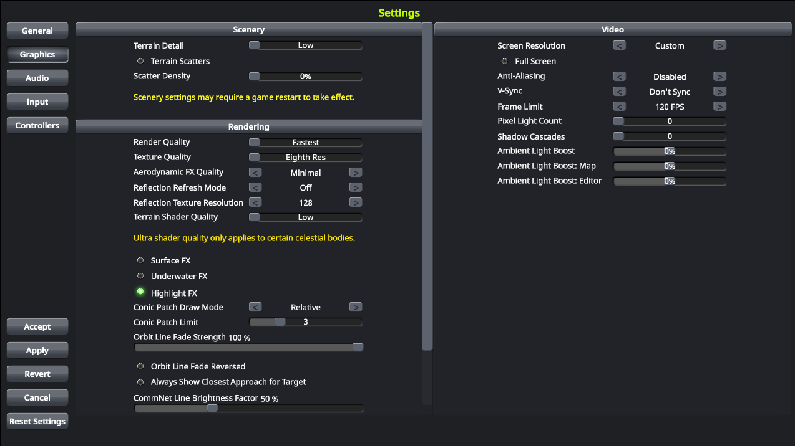

KSP is not a simple game to pick up. While it isn't the most technical and realistic simulator, reaching a great balance between realism and fun, it is a space flight simulator and playing it reflects that. This is an intro guide to help get you started with KSP to help you eventually reach the stars!
You should already have KSP installed on your computers. If you do not, or want to install it on a personal computer, then you can do so as follows:
Open the game and after a minute-or-so it should land on the title screen. You may notice that your computer sounds like it might blast-off like a rocket due to how fast the fan is blowing. This is normal, but we can make it run a bit more smooth by fixing the graphical settings. On the title screen, select "Settings" and select the "Graphics" tab. Adjust your graphics to match the image below, which will help it run smoothly. On your personal computer, these settings can be much more generous. Click "Accept" to lock-in the settings.
We will want everyone using the same game and difficulty setting to make the space race competitive. Return to the main menu and then select "Start Game". In the new menu, select the "Start New" option.
When finished, select "Start!" to enter the game!
You are now at the Kerbal Space Center, where rockets are designed, launched, tracked, and their debris analyzed. The best way to see how the game works is to jump right in. The tall building in the middle is the "Vehicle Assembly Building" (VAB), select it to get started making your first rocket!
As of now, you have very few parts with which to make a rocket - but you have enough. Each rocket will have a guidance part (such as a cockpit or computer navigation part), engines and fuel, and some kind of utility to help it complete its mission (such as docking rings, science stations, landing struts, parachutes, etc). The tabs on the far left of the screen help you display available parts based on their function. Cycle through them and see what you have.
Begin your first rocket by selecting a command pod - every rocket begins with the choice of command pod - then select a rocket, and then include any utility you might have or it might need. When you have put all these things together, give your first rocket a name, and then select "Launch" from the options in the top right of the screen.
You and your rocket are now on the launch pad. A screen shot is below, with currently relevant parts of the screen explained.
Hit the spacebar on your keyboard to initiate the first stage, hopefully igniting the engine. Your craft should launch in the air, gaining some speed in the process. Let the rocket run its course and eventually the momentum of the rocket will run out and then begin falling back to the ground. Hopefully you included a parachute and hopefully it is in the second stage. Decide on the right time to press spacebar again to initiate the second stage, hopefully deploying the parachute.
Was the mission a success? Did your pilot walk away from the craft, or it have an unfortunate incident with the ground? Don't worry, your pilot will be back and ready to go on another mission in a couple hours. The cresent-shaped building behind the VAB on the main screen is the Astronaut Complex, and you can recruit new pilots from there and re-recruit pilots who went on a less-than-successful mission.
KSP is about trial and error. Think about what happened in your mission and why it may not have gone as smoothly as you wanted. Then think about things that you can change, either about the design of the rocket or the execution of the launch to make it go better.
Design, launch, and re-design and re-launch your craft. You goal by the end of the day is to use nothing more than the starting technology to fly a rocket that successfuly launches and safely returns back to the ground with your pilot surviving. This is your first Milestone Mission Objective.
When you have successfully accomplished the mission, take a screen show of your rocket after it has safely landed and complete your first Mission Report. Submit your mission report to This Google Form. Once you have successfully completed and submitted the report, you will be given instructions on how to access to more technology. Your goal for the week is to use this technology to design a rocket which successfully launches, obtains an orbit around Kerbin, and then safely returns to the planet.